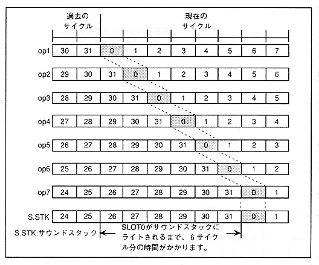

Slot 1 is read for data read, slot 0 for interpolation, EG and ALFO, slot 31 and 30 for level calculation, and slot 30 for sound stack. .
】 Slot operations start at slot 0 and progress toward slot 31, so the slots are written in order from the youngest to the sound stack. However, there is a time difference between the calculation of the slot and the time the slot is written to the sound stack. For example, it takes 6 cycles before slot 0 is written to the sound stack, as shown in Figure 4.31.
As shown in Fig. 4.30, when connecting another slot to the slot, it is not possible to actually connect it unless the slot on the connected side is OP2 and data has already been written to the sound stack.
For example, for other slots that can be connected to slot 0, when OP2 is slot 0, the sound stack has slots up to "27", so colored sound data up to "27" is applicable. This can be expressed as follows:
{Current slot number + 32-
Slot number (sound stack) + A} ≧ 5
The current slot number represents the register slot number. However, for A, substitute "32" when the sound stack of the slot you want to connect is the current cycle and "0" when it is the past cycle.
”The past here refers to the data of the cycle one sample before.
Figure 4.31 Time difference until the slot is written to the sound stack
